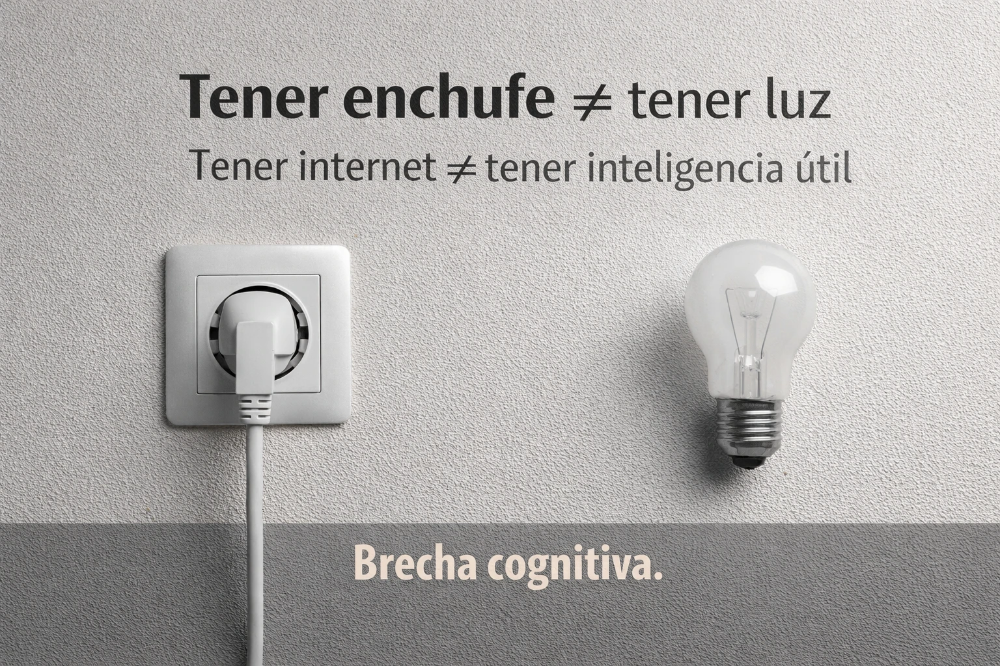

estrategIA #120 ·
Tener conexión no es suficiente
El contexto
Un enchufe y una bombilla separados representan la distancia entre disponer de infraestructura y aprovecharla. La comparación se traslada al acceso a internet: contar con conexión no asegura poder utilizar la IA de forma útil.
Publicado en: estrategIA #120 — CES 2026: La IA conquista el mundo físico (y se vuelve universal)
Leer el texto de la imagen
Tener enchufe ≠ tener luz Tener internet ≠ tener inteligencia útil Brecha cognitiva.